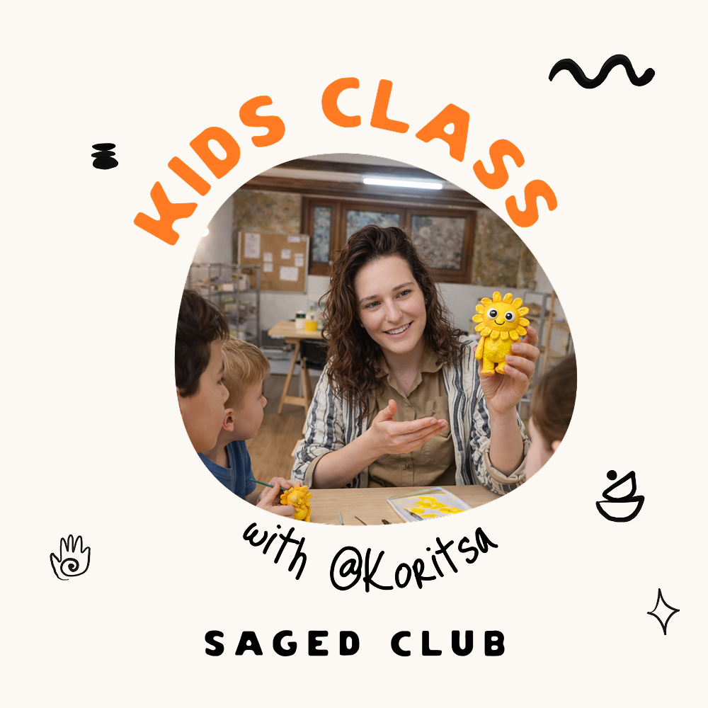

Літо 2026 · 6–10 років · Стара Валенсія
Літній керамічний табір
для дітей з Корицею
Чотири ранки творчості поспіль. Ліпка руками, глазур, два випали. Діти йдуть додому зі своєю готовою керамікою.
Написати в WhatsAppТри тижні на вибір
6–9 липня
Понеділок — четвер
10:00 – 12:00
20–23 липня
Понеділок — четвер
10:00 – 12:00
3–6 серпня
Понеділок — четвер
10:00 – 12:00
Що роблять діти
День 1–2
Знайомство з глиною. Ліплять руками свій виріб — чашку, мисочку, фігурку, що захочуть.
День 3
Глазур і колір. Обирають, як прикрасити свою роботу. Студія робить другий випал.
День 4
Фінальне складання, фото з готовою керамікою. Діти забирають свої роботи додому.
Що включено в 120 €
- 4 заняття по 2 години
- Глина, інструменти, робоче місце
- Глазур і колір на вибір
- Обидва випали — бісквіт і глазурний
- Фартухи і все необхідне
- Готова кераміка додому
Хто вчить
Кориця — українська керамістка з Валенсії, веде свою студію @korytsia_studio. Для неї глина — повільний матеріал, що не терпить поспіху. З дітьми працює терпляче та індивідуально.
Як записатися
Напишіть нам у WhatsApp — розповімо більше, відповімо на питання, забронюємо місце для вашої дитини.
Часто запитують
Що взяти з собою?
Нічого — все даємо. Тільки одяг, який не шкода трохи забруднити. Фартухи на місці.
Чи потрібен досвід?
Ні. Це табір саме для тих, хто вперше торкається глини. Кориця допомагає кожній дитині індивідуально.
Безпечно з піччю та випалом?
Так. Випали робить студія — діти беруть участь лише у ліпці й розписі. До печі їх не підпускаємо.
Можна записати двох дітей з однієї родини?
Так, звичайно. Напишіть нам — обговоримо віковий діапазон і розмір групи.
Коли забирають готову кераміку?
Наприкінці табору (день 4). До того часу всі роботи вже пройшли обидва випали.
А якщо дитина передумає на півдорозі?
Буває. Якщо щось іде не так — напишіть нам, домовимося. Ми розуміємо, що табір — це експеримент для багатьох родин.